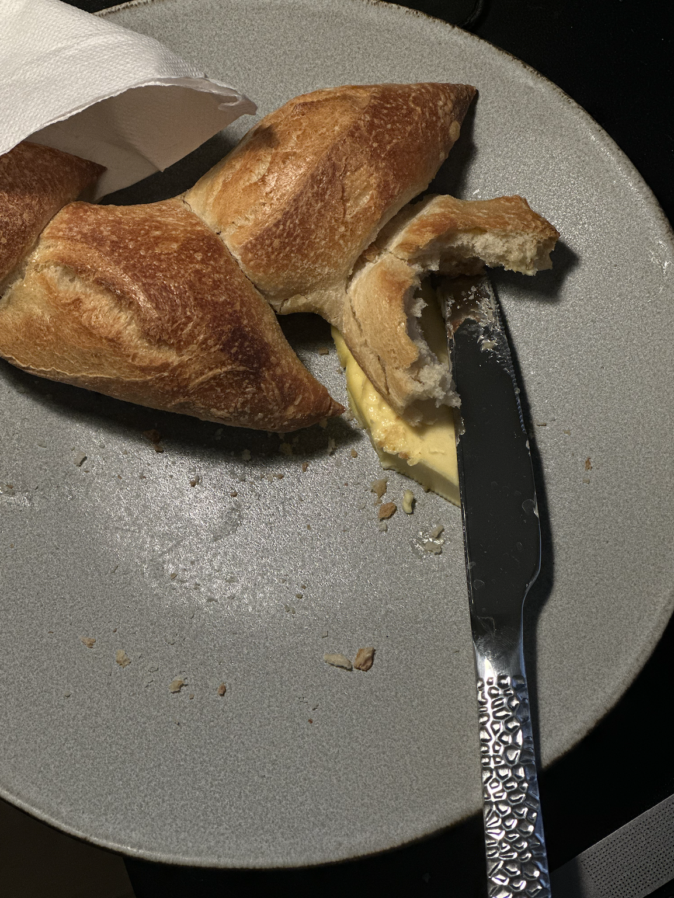
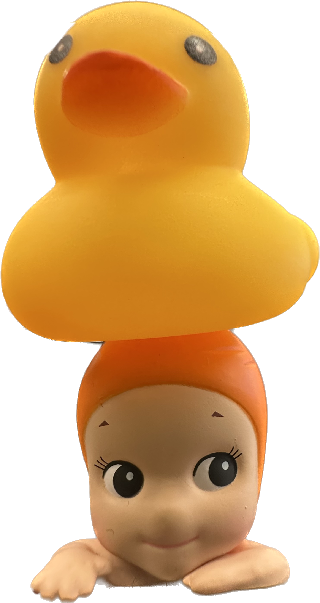
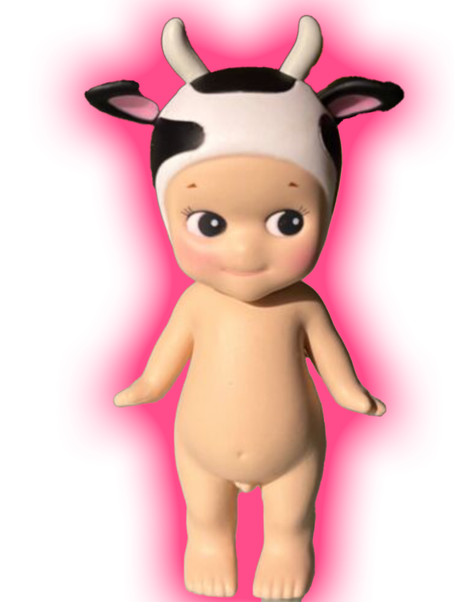

quack,quack,quack. "Time is the thing. Time is the essential piece of interpretation. You cannot start without me. See, I start the clock. Now, my left hand, it shapes, but my right hand, the second hand, marks time and moves it forward. However, unlike a clock, sometimes my second hand stops, which means that time stops. Now, the illusion is that like you, I'm responding to the orchestra in real time, making the decision about the right moment to restart the thing, or reset it, or throw time out the window altogether. The reality is, that right from the very beginning I know precisely what time it is, and the exact moment that you and I will arrive at our destination together."
Ducks glide on ponds with grace and ease,
Their gentle quacks a soothing breeze.
But little do we know what they see,
A world of wonder and philosophy.
They paddle and play, yet they seem to
think,
Of life's big questions, what makes them sink or swim.
Is there more to life than pond and bread,
Or is this all that's left to be said?
But then they shake their feathers and smile,
As if to say, life is just a little while.
So let us paddle, quack and play,
For what else is there to do each day?
So here's to ducks, wise and cute,
Reminding us to live and live pursuit.
For who knows what life truly means,
But all we have is now and our dreams.
Neoliberal psychopolitics is always coming up with
more refined forms of exploitation. Countless self-
, which occurs inte
management workshops, motivational retreats and seminars on personality or mental training promise
t escaped Foucaul.
boundless self-optimization and heightened efficiency.
They are steered by neoliberal techniques of domina-tion, which aim to capitalize not just on working time but on the person him- or herself: all the attention the individual commands and, indeed, his or her very life.
e interrelation been f power: I think thirte t in Western civilization) es of domination bor s
Ito account the interste iques of domination
int the points where e another have reoux nself. And conversh echniques of sells ration' (About it tures at Dartmon versity of Chiast
Neoliberalism has discovered integral human being as the object of exploitation.
The neoliberal imperative of self-optimization serves only to promote perfect functioning within the system.
Inhibitions, points of weakness and mistakes are to be therapeutically eliminated in order to enhance efficiency and performance. In turn, everything is made comparable and measurable and subjected to the logic of the market.
It is not concern for the good life that drives self-optimi-zation. Rather, self-optimization follows from systemic constraints - from the logic of quantifying success on the market.
The new technology must be spiritually oriented because it must aspire to raise man's spirituality and expand man's consciousness. It must begin by being "humanistic" though the white boy has yet to achieve this. Witness a technology that kills both plants and animals, poisons the air & degenerates or enslaves man.
The technology itself must represent human striving. It must represent at each point the temporary perfection of the evolutional man. And be obsolete only because nothing is ever perfect, the only constant is change.
Amistad 2, 1970